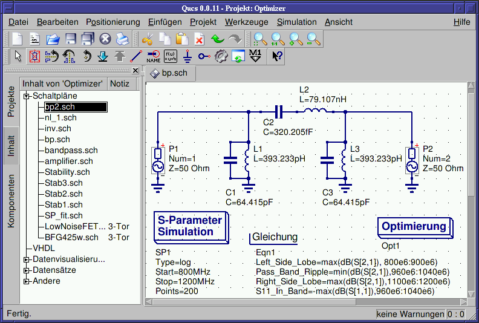
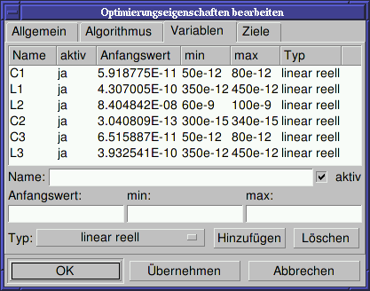

- Qucs -
Ziemlich Universeller Schaltungssimulator
Einführung in die Optimierung
Für die Schaltkreisoptimierung verwendet Qucs ein Programm namens ASCO
(http://asco.sourceforge.net/).
Es folgt eine kurze Beschreibung, wie man ein Schaltplan dafür
vorbereitet, die Optimierung ausführt und die Ergebnisse
interpretieren kann. Bevor man diese Funktionalität benutzen kann,
muss ASCO auf Ihrem Computer installiert sein.
Die Optimierung eines Schaltkreises ist nicht mehr als die Minimierung
einer Kostenfunktion. Das kann entweder die Verzögerungszeit oder die
Anstiegszeit in einer digitalen Schaltung, oder die
Leistungsverstärkung einer analogen Schaltung sein. Eine andere
Möglichkeit ist die Definition des Optimierungsproblems als eine
Zusammensetzung von Funktionen, was in diesem Fall zu einem Gütefaktor
führt.
Um einen Schaltplan für ein Optimierung vorzubereiten, müssen zwei
Dinge hinzugefügt werden: Gleichungen und die Optimierungskomponente.
Nehmen Sie den Schaltplan aus Abbildung 1 und verändern Sie es
solange, bis Sie den Schaltplan in Abbildung 2 erhalten.

Abbildung 1 - Ursprünglicher Schaltplan.

Abbildung 2 - Vorbereiteter Schaltplan.
Jetzt öffnen Sie die Optimierungskomponente und wählen die
Algorithmusschaltfläche an. Aus den existierenden Parametern sollte
besonders auf 'Maximale Anzahl der Iterationen', 'Constant F' und
'Crossing over factor' geachtet werden. Über- oder Unterschätzung
kann zur vorzeitigen Konvergenz des Optimierers in einem lokalen
Optimum führen oder auch zu sehr langen Optimierungszeiten.

Abbildung 3 - Optimierungsdialog, Algorithmusoptionen.
Die Variablenschaltfläche, wo die Schaltkreiselemente definiert
werden, die in einem bestimmten Interval optimiert werden können, ist
in Abbildung 4 dargestellt. Die Variablennamen korrespondieren zu den
Namen, die in die Komponenteneigenschaften platziert wurden und
nicht zu den Namen der Komponenten.

Abbildung 4 - Optimierungsdialog, Variablenoptionen.
Schließlich müssen noch die Ziele der Optimierung (maximieren,
minimieren) und Optimierungsgrenzen (kleiner, größer, gleich) in der
Zielschaltfläche eingegeben werden. ASCO kombiniert diese Ziele zu
einer einzigen Kostenfunktion, die dann minimiert wird.

Abbildung 5 - Optimierungsdialog, Zieloptionen.
Der nächste Schritt ist die Veränderung des Schaltplans und die
Definition der Schaltkreiselemente, die optimiert werden sollen. Der
enstehende Schaltplan wird in Abbildung 6 dargestellt.

Abbildung 6 - Neues Qucs Hauptfenster.
Der letzte Schritt ist die Ausführung der Optimierung, d.h. das
Starten der Simulation durch Drücken von F2. Wenn die Optimierung
beendet ist, was auf einem modernen Computer ein paar Sekunden dauert,
werden die besten Simulationsergebnisse angezeigt.

Abbildung 7 - Qucs Ergebnisfenster.
Die besten Schaltkreisgrößen findet man im Optimierungsdialog auf der
Variablenschaltfläche. Es sind jetzt die Anfangswerte für jede der
eingeführten Variablen (siehe Abbildung 8).

Abbildung 8 - Die optimierten Schaltkreisgrößen.
zurück nach oben